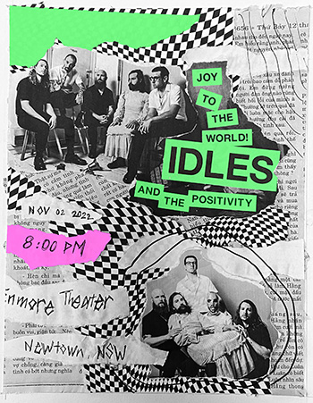
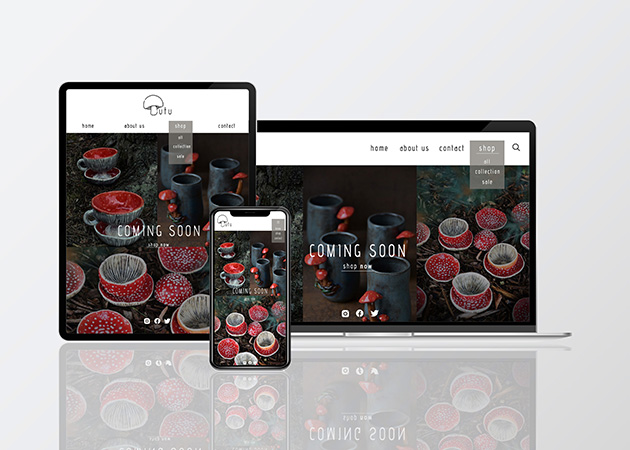

"The Martian" Film Poster Redesign
IDLES band poster
"Better Future" Poster
This thought-provoking poster delves into the common belief held by many individuals that migrating to another country guarantees greater financial prosperity. It aims to challenge this assumption and shed light on the complexities and realities of such a decision. Through captivating visuals and poignant messaging, the poster serves as a reminder that while migration can offer new opportunities, the pursuit of wealth should not overshadow the importance of cultural roots, personal fulfillment, and community connections. It encourages viewers to contemplate the multifaceted aspects of migration and consider the broader implications beyond monetary gain, ultimately sparking a deeper reflection on the true meaning of success and happiness in a globalized world.
Enchanting Goblincore Ceramic Store front page design
This project aims to create a captivating and user-friendly website for a ceramic store, taking inspiration from Goblincore's unique design language. The website's goal is to provide visitors with an immersive and enchanting experience that showcases the store's ceramic products.
The website's aesthetic is built on the foundation of Goblincore design language, incorporating elements of whimsy, nature, and fantasy. The design captures the charm and intrigue of Goblincore, creating an engaging atmosphere that resonates with the target audience.
The website's color palette features neutral tones that create a harmonious and earthy ambiance, complementing the ceramic products. Subtle hues and organic textures convey a sense of natural beauty, enhancing the connection to the underlying Goblincore theme.